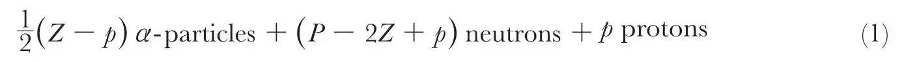
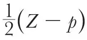
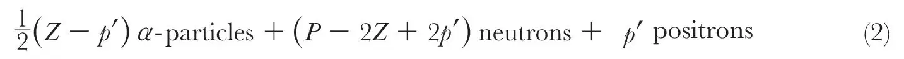
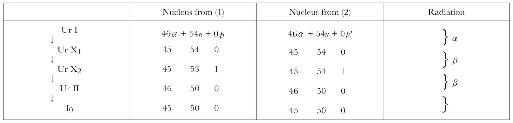

中文
中文G. W. Todd
Editor’s Note
Walter Elsasser had recently suggested that the proton might be a composite of neutron and positron, and that this hypothesis might help explain the positive charge of nuclei. Here George Todd criticizes that idea, and suggests another. He notes, however, that a particular transmutation of uranium can be understood in Elsasser’s picture if the process involves the spontaneous creation of an electron and positron from nothing—a process that is now known to happen, although not here. Todd’s proposed nuclear constitution leads to the conjecture that isotopes differ only by the number of neutrons in the nucleus, another prescient suggestion. 中文
IN Nature of May 27, Dr. W. Elsasser offers evidence in favour of the suggestion that the proton consists of a neutron and a positron. Examining the question from a different point of view, I put forward the following as evidence against the suggestion. 中文
If we allow that an atomic nucleus may contain α-particles, protons, neutrons, electrons and positrons, the number of possible structures for a nucleus of atomic mass P and atomic number Z increases rapidly with increase of P and Z, and for the heavy atoms it may run into hundreds. If we exclude the possibility of unattached electrons and positrons in the nucleus, then the structure becomes unique and is given by

where p = 0 or 1, whichever value makes

an integer. 中文
It is also possible to get a unique structure by excluding the possibility of unattached electrons but allowing the possibility of positrons. The structure is then

where again p' = 0 or 1 as before. This is practically the suggestion which Elsasser supports. 中文
Using these expressions, we can trace the changes which take place in the nuclei of radioactive elements during α- and β-ray transformations. The accompanying table shows a typical set of transformations.

The explanation of the α-ray changes is obvious. The β-ray changes in a radioactive series generally occur in pairs and the pair above shows changes identical with all other pairs of β-ray transformations. If the nuclear contents are expressed by (1), the changes take place in the following reasonable manner:—
1n → 1p + 1β the proton remaining in the nucleus,
and 3n + 1p → 1α + 1β the α- particle remaining in the nucleus.
On the other hand, if expression (2) gives the nuclear contents, then the changes which take place are
0 → 1p' + 1β, a positron appearing in the nucleus,
and 4n + 1p' → 1α + 1β, the α-particle remaining in the nucleus.
But where do the electron and positron come from in the first change, and how is the alteration in charge to be accounted for in the second change? 中文
It is interesting to note that the expressions (1) and (2) give lower limits to the mass of an isotope. The minimum value from (1) is P ≥ 2Z － p and from (2) it is P ≥ 2Z － 2p'. It will also be observed that isotopes only differ from each other in the number of neutrons in their nuclei. 中文
(132, 65; 1933)
George W. Todd: Armstrong College, Newcastle-upon-Tyne, June 3.